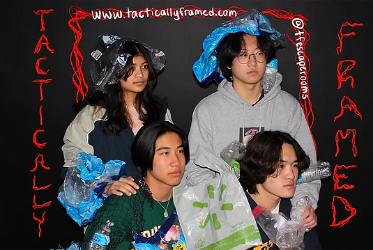
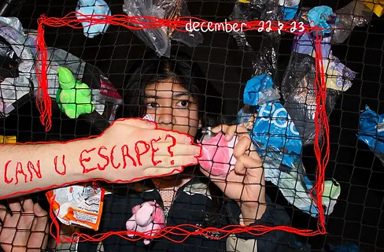
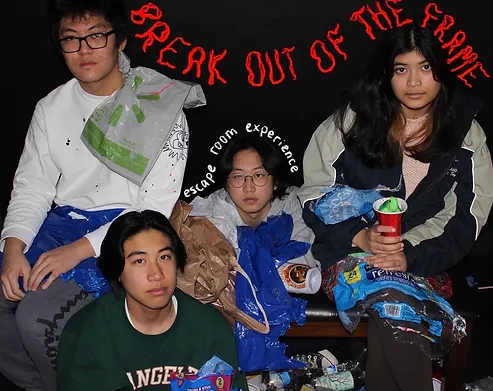

The Event




Inspired by Vox Explained, we wanted to expose how grave issues have become "tactically framed", in which the focus shifts from the actual issue at hand to instead how it is used as a strategy for someone's agenda. The disturbing distrust in science has resulted in the tactical framing of climate change. We ideated and designed an escape room experience to interactively communicate the disinformation surrounding climate change, exposing the tactical frames of the world that manipulate us. Our goal was to creatively expose common tactics that manipulate public perception on this pressing issue.
This room focuses on how oil tycoons, fossil fuel companies, and other corporations like have framed climate change as something trivial in order to keep their businesses alive.
This room centers on how the United States has avoided accountability in our immense share to climate change + how we rather place the blame on other countries.
This room focuses on how people further climate change as they claim it is "supposed to happen" or the work of God.
This room centers on how climate change has been blamed on consumers when in reality it's the businesses and systems.